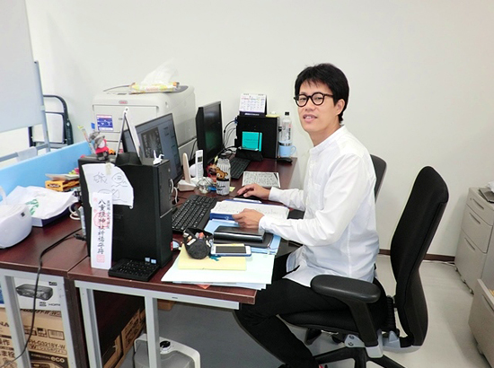
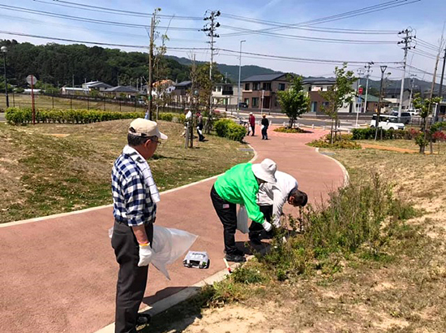

被災地のいま 宮城県・福島県の現状
被災地のいま ～宮城県亘理郡～
第73回 2019年9月5日 ―まち・住まい・コミュニティ―
地域課題を解決できる
自治組織をつくる
宮城県亘理郡山元復興ステーション
山元町は町域の約4割が津波で浸水しました。被災した住民の多くは、内陸に移転したJR常磐線が通るつばめの杜地区などの新市街地に集団移転し、新たなコミュニティを形成しました。沿岸部に残って暮らすことを選んだ住民たちも、地域コミュニティの再構築に向けて歩み始めました。
山元復興ステーションは、山元町の委託を受けたNPO法人神戸まちづくり研究所が運営する団体です。2012年11月の発足以来、住民に寄り添いながらコミュニティづくりの支援を続けています。
「当初は逆風のなかでの活動でした」とステーションを率いる橋本大樹さんは言います。
行政とのコーディネーターとして参加した会議では“どうせ行政の代弁者だろう”と不信感を持たれ、不平や不満を聞くことから始めました。
信頼に変わってきたのは、ステーションの支援で住民自身が地域内の課題に取り組み、“自分たちもやればできる”という成功体験を積むようになってからです。
集団移転地に自治会ができた時、橋本さんは住民に「将来的には皆さんが自分たちで地域の問題・課題を解決できるようにならなければならない」と伝えました。
一つは人口減少が急激に進んだため。もう一つは、住民と行政の“協働”でまちづくりを進めてほしいとの思いがあったからです。
沿岸部の中浜地区は震災を境に世帯数が315世帯から26世帯に減りました。笠野地区も磯地区も世帯数は震災前より激減しました。
人口が減れば当然行政の職員も減ります。「すると、例えば草刈など今まで行政が担っていたことを地域が行なう時代になる。そうなった時に受け入れ態勢ができている自治会とそうでない自治会では、苦労の程度に差が出ます」。
少ない住民で地域をどう維持していくか…。「何から何まで行政に要望するのではなく、普段から、この課題は行政に任せる、この事業は行政と一緒に実施する、これは自分たちが担うという分別をしておくことが大切です」。
橋本さんは「協働とは、住民と行政が対等な立場で意見を言い合えること」と言います。住民が自分たちで地域の課題を解決しようとする気運も、そうした関係のなかから生まれるのでしょう。
震災から8年半。コミュニティ再生はこれからが正念場です。

▲山元復興ステーションの橋本大樹さん。
2012年、神戸まちづくり研究所から派遣されて山元町へ移住しました。

▲公園利用者の有志で公園管理会を組織し、清掃や樹木施肥などの活動を行なっています。
(写真提供：山元復興ステーション)
2019年3月21日、みやぎ生協はコープふくしま・福島県南生協と組織合同しました。このコーナーのタイトルも「被災地のいま みやぎ生協・コープふくしまから宮城・福島のいまをお伝えします」に変え、福島県の現状についてもお伝えしていきます。
前の記事
第72回「―まち・住まい・コミュニティ― 「自分たちの町のために何かしなきゃ」 集う機会がもたらした地域力 宮城県南三陸町社会福祉協議会「結の里」」（2019年8月5日）